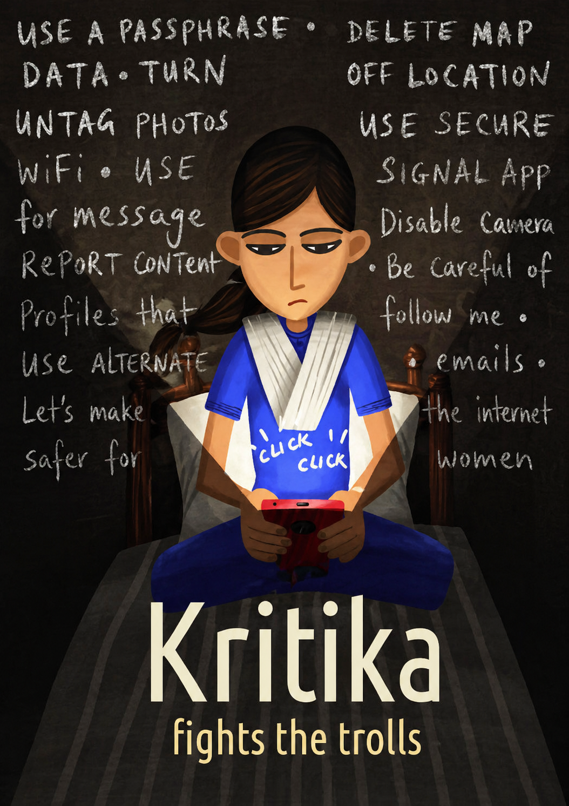
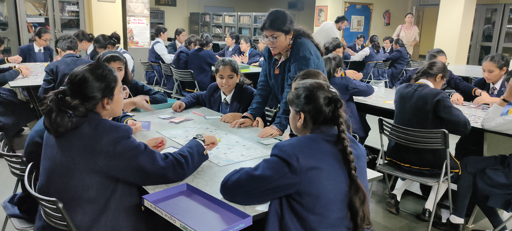
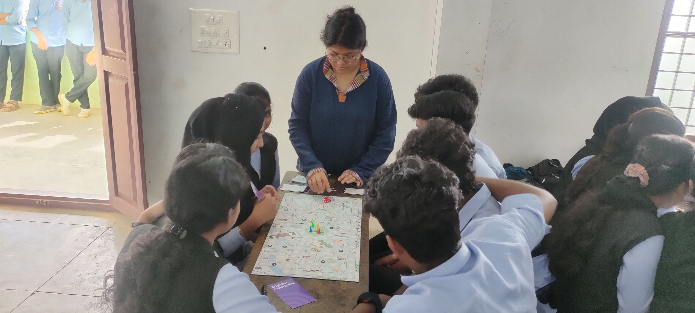
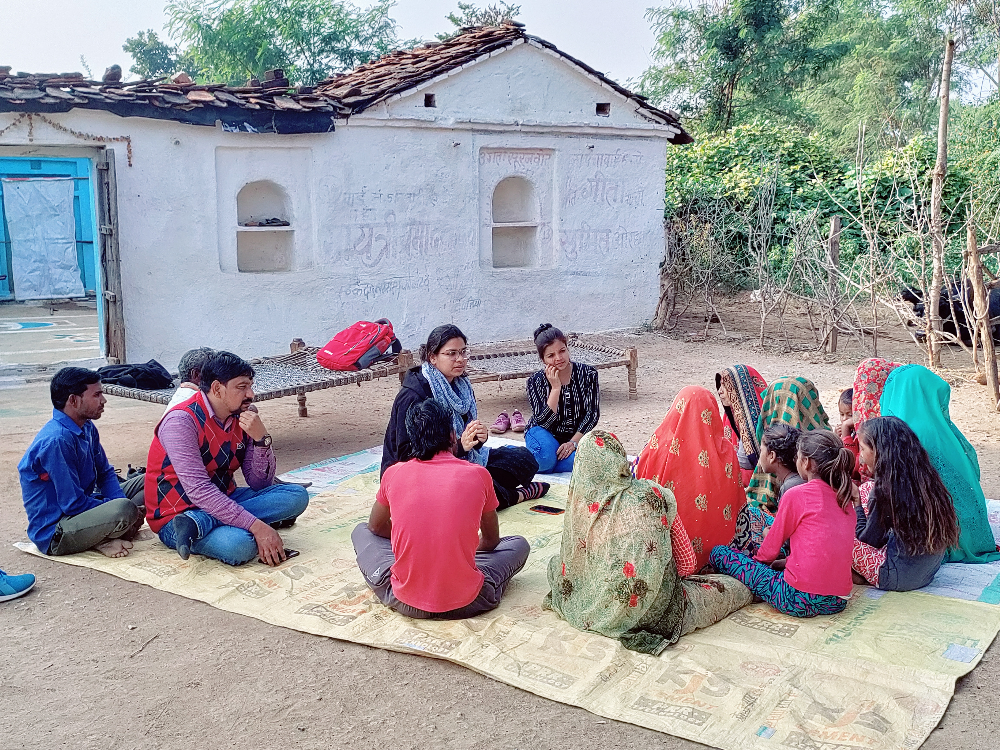
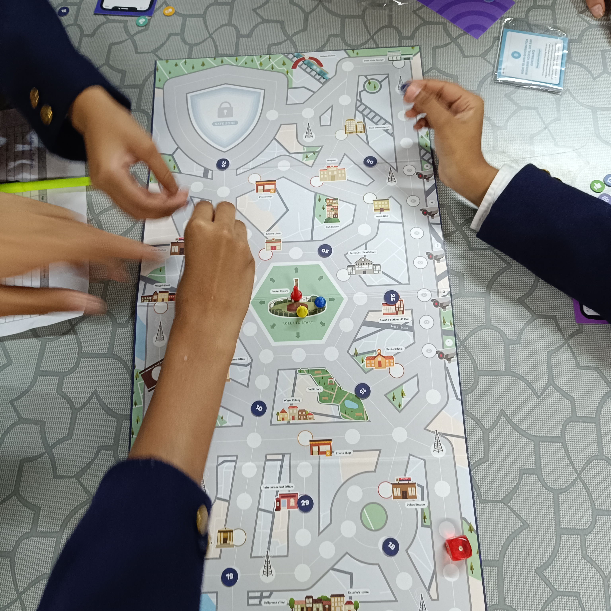
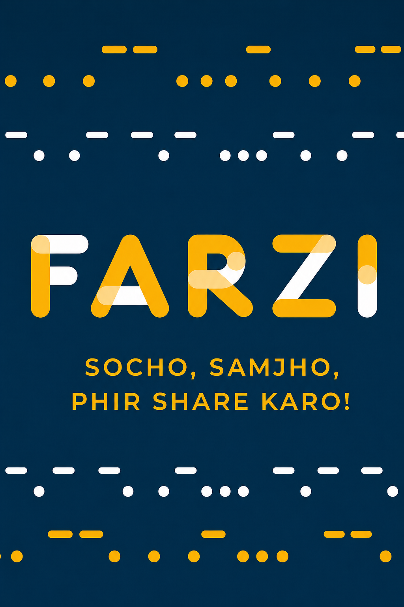
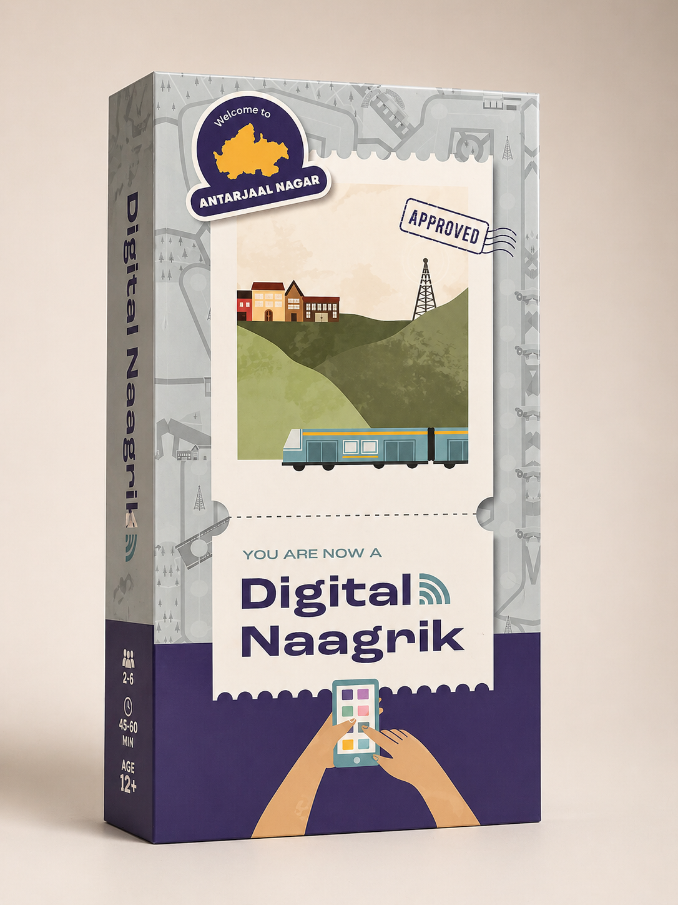

Digital rights, youth agency, and civic action as a playable system — navigating platform behaviour, rights claims, and collective response.

About the game
Kritika is a digital rights game for young people — designed around the question of what it means to have agency in a world of algorithmic platforms, data extraction, and digital public spaces. Players navigate scenarios of online harm, platform manipulation, and rights violation — and build the knowledge to respond.
The game takes seriously the civic dimension of digital life for young people: that the platforms they inhabit are not neutral, that their data is not free, and that their rights in digital spaces are real and claimable. Kritika builds the literacy and confidence to act on that understanding.
01 — Design
Built through research into young people's experiences of digital platforms — harassment, privacy violations, algorithmic manipulation, and the gaps in formal digital rights frameworks. Design workshops were co-led with young people who contributed the scenarios, language, and game mechanics.
The design question: what would digital rights education look like if it was built from young people's actual experiences, not from institutional frameworks? Co-design with youth shaped every element of Kritika.
02 — Development
A rights-focused civics game for youth groups of 8–20 participants.
Scenarios drawn from real youth digital experiences: privacy violations, algorithmic bias, online harassment, content removal. Each scenario presents a rights question.
Players identify which rights are at stake in each scenario — freedom of expression, privacy, non-discrimination, access to remedy — building normative literacy through application.
Players choose individual and collective responses: document, report, organise, advocate, litigate. Different actions have different effectiveness and costs.
Card-and-discussion game for 8–20 participants. 1.5–2.5 hours. Designed for youth groups, school digital literacy programmes, and civil society youth engagement.
03 — Deployment
Kritika is used in digital rights education, youth civic engagement, and community media literacy contexts.
Used in youth digital rights programmes as an experiential foundation for advocacy and civic engagement.
Deployed in school digital literacy curricula as a rights-focused complement to skills-based digital education.
Run in civil society youth engagement programmes as a tool for building digital rights knowledge and collective action capacity.
Outcomes
Young people develop digital rights literacy — the knowledge, language, and agency to navigate digital life as rights-holders.
Participants know their digital rights — privacy, expression, non-discrimination — and can identify when they are being violated.
Players develop structural understanding of platform behaviour — algorithmic incentives, data extraction, content governance.
The game builds understanding of why individual responses are insufficient and how collective action changes the power dynamic.
Young people emerge with the sense that digital rights are real, claimable, and worth fighting for.




Use Kritika in your youth digital rights programme, school curriculum, or civic engagement initiative. The game is designed for youth facilitators.
Get in touch →
Misinformation, verification incentives, and social forwarding behaviour as a community card game.

Digital citizenship, rights, and platform behaviour as a playable civic system.
Geopolitics of internet fragmentation as a rules-based multi-stakeholder simulation.